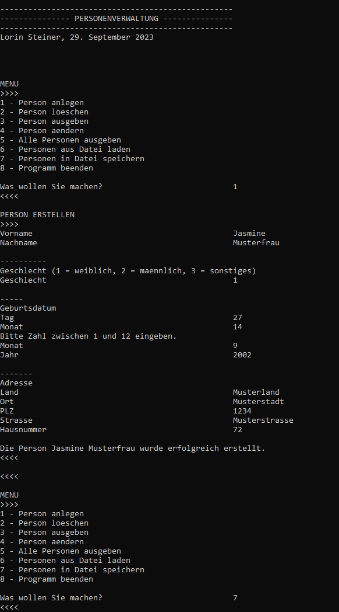

Portfolio
Hier finden Sie einige Arbeitsproben von Projekten von mir:
In Java programmierte ich einen Taschenrechner mit einem GUI (Graphical User Interface). Dafür verwendete ich Swing.
grafischer Taschenrechner in Java
In Java schrieb ich ausserdem eine Personenverwaltung, in der man Personen erstellen, löschen, bearbeiten, speichern, laden und anzeigen kann.
Personenverwaltung in Java
Die gleiche Personenverwaltung wie in Java schrieb ich auch in C.
Personenverwaltung in C
“car chase” war mein erstes Spiel, das ich selbstständig ohne Tutorial in der Godot Game Engine programmiert hatte.
car chase a
“knightblade” war das Computerspiel, das ich für die Projektarbeit in der dritten Sekundarschule programmiert hatte. In diesem kann man gegen Skelette kämpfen, Steaks von Kühen essen und Münzen einsammeln.
knightblade
In “knightblade” kann man auch in Arenen gegen Skelette in verschiedenen Wellen kämpfen. Dafür bekommt man als Belohnung Bücher, welche dem Spieler gute Fähigkeiten verleihen (z.B. Stärke).
knightblade